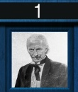
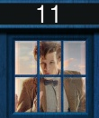
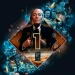
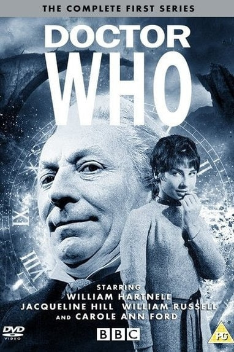
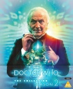
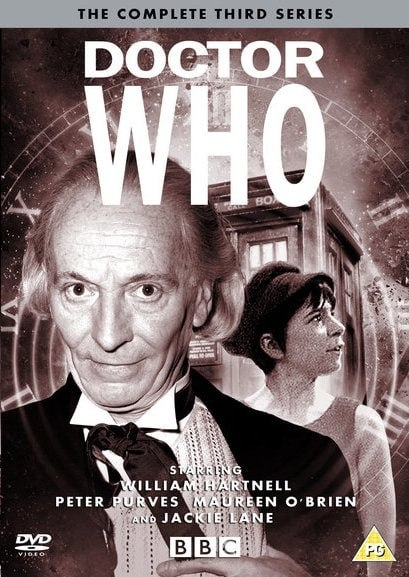

Таблица коллекции |  Навигация по канону |  Связные экранизации |



Новая эра (Ньюскул) с 2005 по 2022:





Перезапуск (Whoniverse) с 2023:


----


Эра Первого Доктора
Актёр: Уильям Хартнелл
Доктор Кто (Классика) - 1 сезон (1963-1964)


Первый сезон открывает сериал: Доктор, его внучка Сьюзен и двое учителей из Коул-Хилл — Йен и Барбара — оказываются заперты в ТАРДИС и путешествуют от каменного века до ацтеков и революционной Франции. Команда учится доверять друг другу, а появление далеков во второй истории делает их главным кошмаром вселенной. Сезон задаёт фундамент сериала: любопытство сильнее страха, а историю не подчинить чужой воле.
2. Далеки (The Daleks) - 7 эпизодов
3. Грань уничтожения (The Edge of Destruction) - 2 эпизода
4. Марко Поло (Marco Polo) - 7 эпизодов
5. Ключи Маринуса (The Keys of Marinus) - 6 эпизодов
6. Ацтеки (The Aztecs) - 4 эпизода
7. Сенсориты (The Sensorites) - 6 эпизодов
8. Господство террора (The Reign of Terror) - 6 эпизодов
Варианты озвучек, подробности выхода и другие ссылки на просмотр в описаниях серийНаш плейлист сезона в ВК
Таблица сезонов и озвучек
Доктор Кто (Классика) - 2 сезон (1964-1965)



Второй сезон углубляет формулу сериала: Доктор, Сьюзен, Йен и Барбара (а позже — и Вики) сталкиваются с масштабными угрозами — от гигантских насекомых на Вортисе до далёкого будущего, где человечество расколото на касты. Далеки возвращаются, подтверждая статус главной угрозы, а сюжет всё чаще балансирует между приключением и моральной дилеммой. Сезон закрепляет идею: путешествия во времени — не побег от проблем, а способ увидеть цену каждого выбора.
2. Вторжение далеков на Землю (The Dalek Invasion of Earth) - 6 эпизодов
3. Спасение (The Rescue) - 2 эпизода
4. Римляне (The Romans) - 4 эпизода
5. Планета-сеть (The Web Planet) - 6 эпизодов
6. Крестовый поход (The Crusade) - 4 эпизода
7. Космический музей (The Space Museum) - 4 эпизода
8. Погоня (The Chase) - 6 эпизодов
9. Вмешивающийся во время (The Time Meddler) - 4 эпизода
Варианты озвучек, подробности выхода и другие ссылки на просмотр в описаниях серий
Таблица сезонов и озвучек
Доктор Кто (Классика) - 3 сезон (1965-1966)


Третий сезон закрепляет «Доктор Кто» как масштабную космическую драму: Доктор путешествует с Вики и Стивеном, сталкиваясь с угрозами вселенского размаха — от коварного плана далеков до разрушительных парадоксов истории. В сюжетах всё сильнее звучит моральная цена вмешательства: порой спасти одних значит обречь других, а долг Повелителя Времени — не менять ход событий, даже когда это невыносимо. Сезон подводит к переменам: характеры спутников раскрываются глубже, а напряжение между их человечностью и философией Доктора нарастает.
2. Миссия в неизвестное (Mission to the Unknown) - 1 эпизод
3. Создатели мифов (The Myth Makers) - 4 эпизода
4. Генеральный план далеков (The Daleks' Master Plan) - 12 эпизодов
5. Резня в канун Святого Варфоломея (The Massacre of St Bartholomew's Eve) - 4 эпизода
6. Ковчег (The Ark) - 4 эпизода
7. Небесный игрушечник (The Celestial Toymaker) - 4 эпизода
8. Меткие стрелки (The Gunfighters) - 4 эпизода
9. Дикари (The Savages) - 4 эпизода
10. Военные машины (The War Machines) - 4 эпизода
Варианты озвучек, подробности выхода и другие ссылки на просмотр в описаниях серий
Таблица сезонов и озвучек
Доктор Кто (Классика) - 4 сезон (1966-1967) (первые 2 серии из 9)

Четвёртый сезон открывается переходом: Бен и Полли — первые современные спутники Доктора — вступают в ТАРДИС, и сериал двигается от исторических авантюр к научной фантастике. «Контрабандисты» закрывают старую формулу — приключение в духе корнуоллских пиратов, а «Десятая планета» резко меняет тон: появляются киберлюди, и Доктор впервые в истории сериала регенерирует. Две серии работают как мост: прощание с Первым Доктором и рождение нового формата, где угроза исходит не от истории, а от холодного расчёта машин.
2. Десятая планета (The Tenth Planet) - 4 эпизода
...остальные серии в эре Второго Доктора
Варианты озвучек, подробности выхода и другие ссылки на просмотр в описаниях серий
Таблица сезонов и озвучек
Также появляется в:
- (1973) 10 сезон, 1 серия: Три Доктора
- (1983) Спецвыпуск: Пять Докторов (камео)
- (1993) Мини-эпизоды: Измерения во времени (камео)
- (2013) 7 сезон, 13 серия: Имя Доктора (камео)
- (2013) Спецвыпуск: День Доктора (камео)
- (2014) 8 сезон, 4 серия: Слушай (камео)
- (2015) 9 сезон, 2 серия: Фамильяр ведьмы (камео)
- (2017) 10 сезон, 12 серия: Падение Доктора (камео)
- (2017) Спецвыпуск: Дважды во времени
- (2022) Спецвыпуск: Сила Доктора (камео)